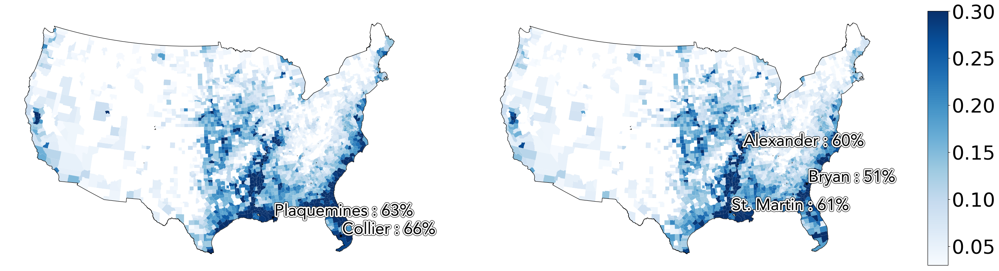

Climate Data Guide - Floods
Hazard Description
Flooding captures the likelihood of a location being directly exposed to flooding, both from precipitation-based inland flooding and from coastal flooding. Flooding is among the deadlier natural disasters and poses direct risks to human health, infrastructure, and economic activity.
Methodologies
Flood potential Indicates the projected flood likelihood, expressed as timeseries of annual expected probability of flooding greater than 0.5 meters at the asset level. We derive this method from WRI’s Aqueduct Flood Hazard Maps product, for both inland and coastal floods. Using a suite of flood maps of varying intensity, we derive an estimate of the expected recurrence period for any amount of flooding.
Observed floods Indicates whether flood was observed in a given year by satellites at the location of an asset. It is derived from NASA MODIS data, for the period 2012 to present.
Known Limitations
- Satellite-derived remote sensing of floods has several well-known limitations. Floods are difficult to observe by satelite, due primarily to cloud cover, which contributes to False Negatives (reporting that there was no flooding, when in reality there was). Additionally, algorithms to detect flooding can report False Positives (detecting a flood when there was none, due to shadows and ground moisture). No historic flood database is comprehensive, even for recent years in the satelite period.
- SSP1 is currently not available from the underlying data product, and our product is using SSP2 in place of SSP1 (SSP2 is duplicated in this product).
Sample Assessment
United States Counties

Projected mean annual flood risk exposure over 1980-2010 (left) and 2022-2052 (right) with SSP5-RCP8.5 scenario.
| US Counties with top flood exposure over 2022-2052 | ||||
|---|---|---|---|---|
| State | County Name | Score (1980-2020) | Score (2022-2052) | Percent Change |
| Panola | Mississippi | 0.0 | 0.08 | N/A |
| Garza | Texas | 0.03 | 0.07 | 141 |
| Sutter | California | 0.0 | 0.07 | N/A |
| Outagamie | Wisconsin | 0.07 | 0.07 | -1 |
| Clay | Illinois | 0.04 | 0.06 | 47 |
English Counties

Projected mean annual flood risk exposure over over 1980-2010 (left) and 2022-2052 (right) with SSP5-RCP8.5 scenario.
| England Counties with top cyclone exposure over 2022-2052 | |||
|---|---|---|---|
| Region Name | Score (1980-2020) | Score (2022-2052) | Percent Change |
| Aberdeen City | 0.12 | 0.06 | -50 |
| Bolton | 0.0 | 0.04 | 800 |
| Manchester | 0.0 | 0.03 | 800 |
| Essex | 0.0 | 0.03 | N/A |
| Manchester | 0.0 | 0.02 | N/A |